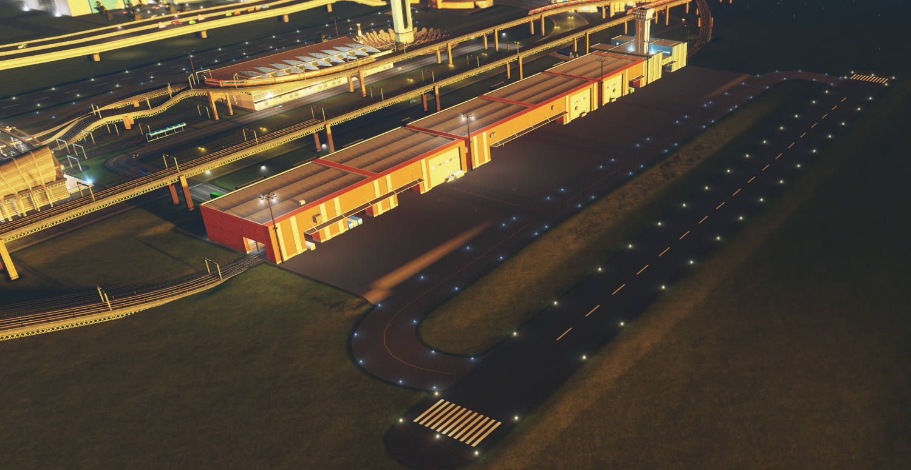
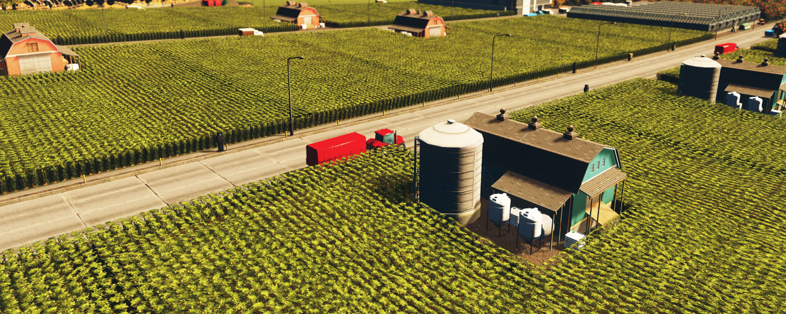
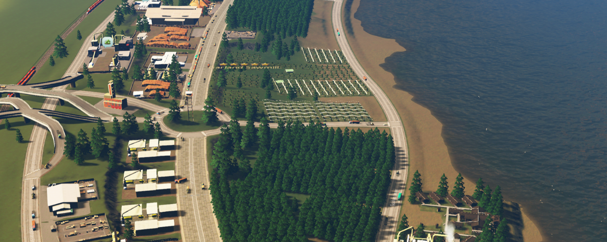

City of Avelburg Tourism - Industry
Avelburg was built on the back of its thriving industries. They brought great minds and workers from the world over, and in turn, the city kept the industrial powerhouses working, while keeping the future of the environment and economy in mind. What resulted was a beautifully efficient and well-designed industrial complex that continues to thrive.
Hogue Farms
Named after founder Meredith Hogue, Hogue Farms started as just a simple family homestead a few miles from the coast. As Hogue's family continued to grow their lands and crops, she expanded its influence and outreach. By the time she retired, it was supplying food and animal products to the entire county and beyond. Nowadays, Hogue Farms is one of the biggest employers in the city, and as one of the biggest contributers to green practices throughout Avelburg.
Garland Sawmill
A few decades after Hogue Farms got its start, a group of lumber workers set out to build a timber business in the quickly-growing Avelburg. On the East Bank, across the river from the main city, they found a beachfront with perfect soil to grow evergreen trees. With sustainable practices in mind, which were revolutionary for the time, the group started Garland Sawmill, which quickly ballooned in size and export capabilities thanks to the recently-contructed cargo airports and train terminals less than a mile away.
